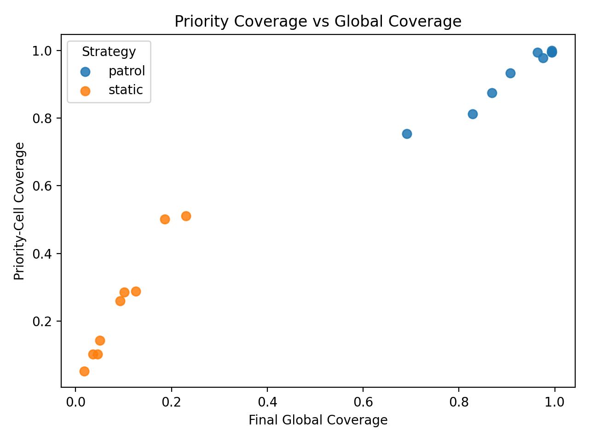
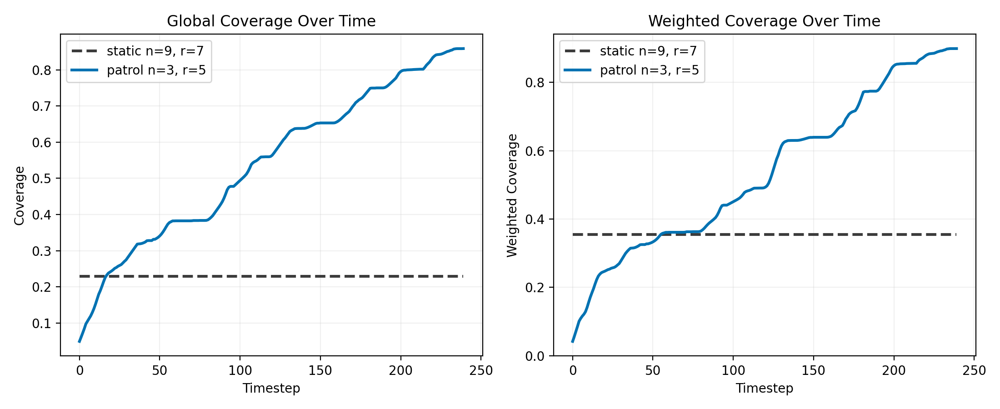
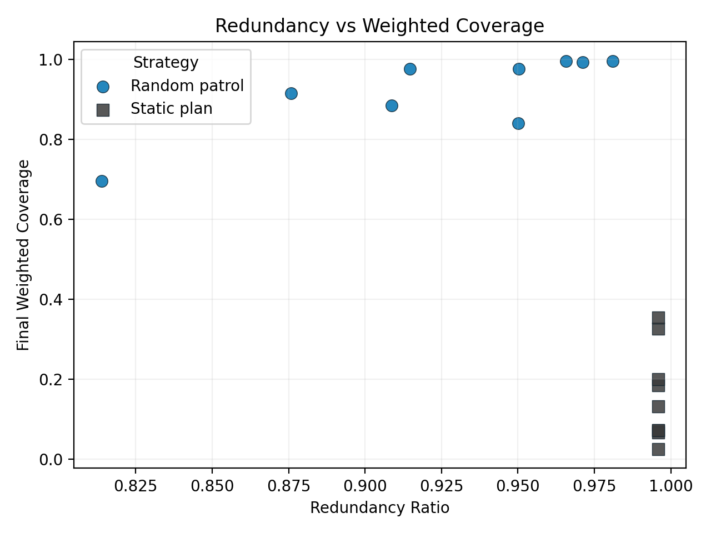
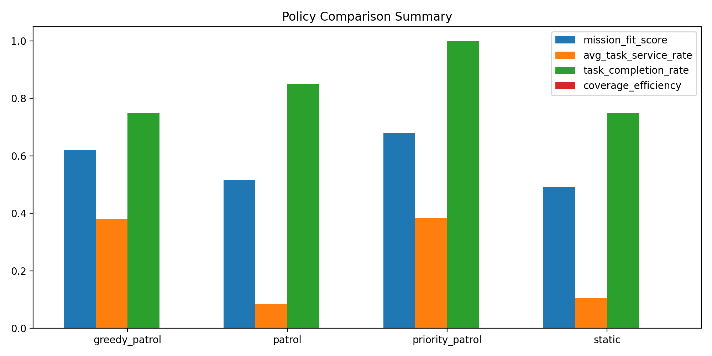
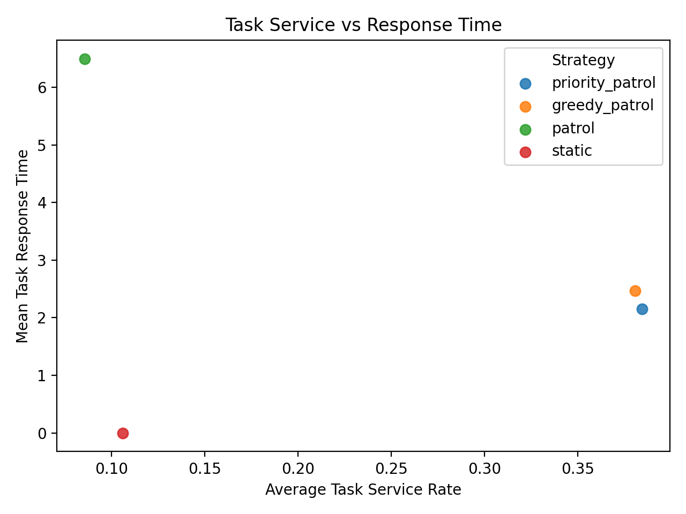
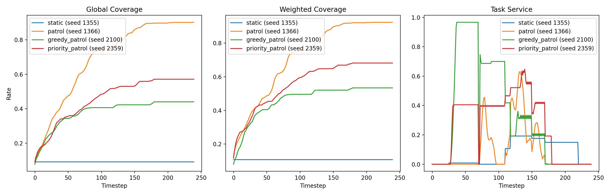

Current readout
- Best dynamic policy: priority_patrol at mission-fit 0.680.
- Task-completion lift vs static: 0.250.
- Weighted-coverage lift vs static: 0.455.
- Priority demo contrast: static weighted coverage 0.355 vs patrol 0.884.
This viewer turns the repo into a showable artifact: a mission brief, the strongest comparison outputs, and direct links into the local dashboard and analyst writeups.
The strongest current story is not that the heuristic always wins. It is that the project now supports honest policy comparison under changing demand, with outputs that are stable enough to review like analyst material.
| Strategy | Drones | Radius | Mission Fit | Weighted Cov | Priority Persist |
|---|---|---|---|---|---|
| patrol | 3 | 5 | 0.816 | 0.884 | 0.863 |
| patrol | 6 | 7 | 0.802 | 0.993 | 0.893 |
| patrol | 3 | 7 | 0.797 | 0.841 | 0.904 |
| patrol | 9 | 7 | 0.781 | 0.995 | 0.916 |
| Strategy | Mission Fit | Weighted Cov | Task Service | Completion | Mean Response |
|---|---|---|---|---|---|
| priority_patrol | 0.680 | 0.562 | 0.384 | 1.000 | 2.15 |
| greedy_patrol | 0.620 | 0.496 | 0.381 | 0.750 | 2.47 |
| patrol | 0.516 | 0.834 | 0.086 | 0.850 | 6.50 |
| static | 0.491 | 0.107 | 0.106 | 0.750 | 0.00 |
These are the stable figures committed in the repo, so the demo is viewable without digging through timestamped result folders.






This is intended to be a lightweight local showcase. Build or refresh the site, then serve the repo root and visit the live-demo page in your browser.
make live-demo
make serve-demo
# then open
http://127.0.0.1:8000/docs/live_demo/index.htmlBest fit: operations analyst, data scientist, data engineer, or autonomy-evaluation-adjacent work. Least natural fit: pure MLE, unless you frame this as the offline evaluation harness for routing or autonomy policies.